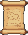
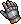
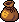
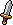
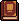

Leku bakoitza ariketa bat da. Ariketak gainditu ahala, zure taldearen fitxak aurrera egiten du bidean. Sakatu leku bat: zer landu behar den eta talde bakoitzak nola egin duen.

Sakatu fitxa bat taldearen maila, XPa, inbentarioa, egoerak eta lorpenak ikusteko. Kide bakoitzak bere fitxa du, eta «Historia» fitxan taldearen ibilbide osoa dago.
Puntu bakoitza XP da. Nahikoa XP lortzean taldeak maila igotzen du:

Objektuak inbentarioan gordetzen dira eta batzuk borroketan erabil daitezke. Egoerek (▲ onak, ▼ txarrak) entrega batzuetan irauten dute.

Gai bakoitzak bere etsaiak ditu: galdera bakoitza etsai bat da. Taldean erantzuten da, txandaka, eta emaitza taldearen «Borrokak» fitxan geratzen da.

Egunkarian gertatutako guztia dago, taldeka eta motaka iragazita. Bitrinan lor daitezkeen lorpenak, mugarriak eta objektuak; ezkutukoak «???» dira.